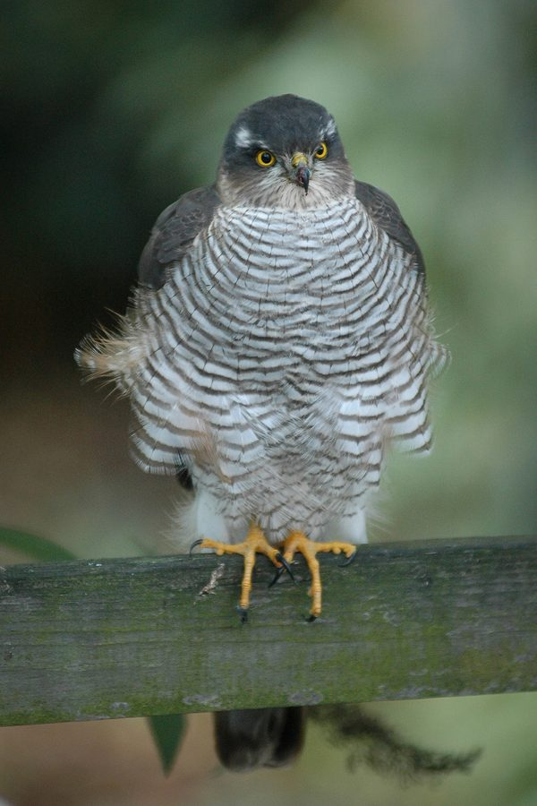

यूरेशियन स्पैरोहॉकEurasian Sparrowhawk
Accipiter nisus · Accipitridae · BRD-0262

- Scientific name वैज्ञानिक नाम
- Accipiter nisus (Linnaeus, 1758)
- Family कुल
- Accipitridae
- Hindi हिंदी
- यूरेशियन स्पैरोहॉक
- Local names स्थानीय नाम
- eurasian sparrowhawk, sparrowhawk
- Status here यहाँ की स्थिति
- native
- Movement आवागमन
- Winter visitor
- Known from कहाँ दर्ज
- Others have published records from the Basti–Ayodhya districts बस्ती–अयोध्या के ज़िलों से दूसरों के प्रकाशित अभिलेख
- IUCN IUCN
- LC
- Review समीक्षा
- audited and independently read
When to look कब देखें
Winter visitor शीतकालीन प्रवासी. Expected mainly in October, November, December, January, February, March, April. मुख्यतः अक्टूबर, नवंबर, दिसंबर, जनवरी, फ़रवरी, मार्च, अप्रैल में अपेक्षित।
Arrives in October–November from breeding grounds in northern Europe and Asia; departs by March–April. Expected in woodland, gardens, and areas with bird concentrations. All migrants and visitors →
Uses and possibilities उपयोग और संभावनाएँ
Drawn from the documented uses in the profile below, where each is labelled traditional, current or a research lead. All uses →
Tell it apart from इनसे अलग पहचानें
यूरेशियन स्पैरोहॉक / Eurasian Sparrowhawk
Accipiter nisus (Linnaeus, 1758) — Accipitridae
यूरेशियन स्पैरोहॉक — यह एक छोटा, फुर्तीला शिकारी पक्षी है जो सर्दियों में आता है। यह छोटी चिड़ियों का शिकार करता है और बहुत तेजी से उड़ता है। मादा नर से बहुत बड़ी होती है। इसकी आँखें तेज़ होती हैं और यह अपने शिकार को दूर से ही देख लेता है। बगीचों और जंगलों के किनारों पर देखी जाती है।
Quick Identification त्वरित पहचान
| Feature | Description |
|---|---|
| Size | Small raptor; females 35–41 cm, males 27–30 cm |
| Build | Compact, streamlined, built for speed |
| Upperparts | Grey or blue-grey (males); brown-grey (females) |
| Underparts | Pale with dark barring (males); buff with dark barring (females) |
| Tail | Long, barred; used for steering in flight |
| Wings | Short, broad; rounded tips adapted for manoeuvring |
| Eyes | Yellow or orange; forward-facing, sharp |
| Cere | Yellow ring around eye |
| Legs | Long, yellow; thin but strong |
| Behaviour | Fast, agile flier; hunts small birds; ambush predator |
| Vocalisations | Rapid "kik-kik-kik" calls or similar |
Field tip: A small, fast-flying raptor with short, broad, rounded wings and long barred tail. Males blue-grey above; females browner. Yellow legs and eye-ring distinctive. Hunts with surprise attacks from behind cover. Often seen in pursuit of small birds.
हिंदी — कैसे पहचानें:
छोटा शिकारी पक्षी।
नर ग्रे, मादा भूरी।
पीली आँखें।
बहुत तेजी से उड़ता है।
Morphology आकारिकी
Biometrics:
| Measurement | Range |
|---|---|
| Total length (male) | 270–300 mm |
| Total length (female) | 350–410 mm |
| Wing (male) | 165–186 mm |
| Wing (female) | 212–242 mm |
| Tail | 145–175 mm |
| Bill | 11–14 mm |
| Tarsus | 30–35 mm |
| Weight (male) | 100–136 g |
| Weight (female) | 190–300 g |
Size: Males 27–30 cm long; females 35–41 cm long. Marked sexual dimorphism in size, with females significantly larger. Wingspan 55–70 cm.
Plumage (male): Crown and back blue-grey or slate-grey. Wings darker with faint barring. Tail blue-grey with darker barring. Underparts white to pale buff with fine dark barring or streaking on breast and flanks. Undertail coverts white.
Plumage (female): Crown and back brown-grey or dark brown. Wings darker. Tail barred. Underparts buff-white with heavier dark barring on breast and flanks.
Eyes: Yellow or orange (in adults); distinctive forward-facing placement for binocular vision.
Cere (eye-ring): Yellow or orange.
Bill: Short, hooked, dark. Adapted for tearing prey.
Legs: Long, yellow, thin but strong. Feathered to eye.
Feet: Yellow, with sharp talons. Adapted for seizing small birds in flight.
Tail: Long, barred, fan-shaped when spread. Used for steering in fast flight.
Wings: Short, broad, rounded. Adapted for manoeuvring through vegetation.
Sexes: Extreme sexual dimorphism in size and plumage colour.
Vocalisations. Call repertoire:
- Alarm call: Rapid, sharp "kik-kik-kik-kik" or similar chattering. Often heard when alarmed.
- Courtship calls: Softer calls during breeding season (not heard in UP).
- Contact calls: Various calls.
हिंदी: "किक-किक-किक" की तेजी से दोहराई जाने वाली आवाज़। सतर्क होने पर जोर से पुकारता है।
Behaviour & Ecology व्यवहार और पारिस्थितिकता
Aviphage: Feeds almost entirely on small to medium birds. Highly specialized bird hunter.
Hunting technique: Ambush predator. Hunts from cover or perches. Attacks prey birds in flight with surprise, high-speed chase.
Prey birds: Takes sparrows, munias, warblers, finches, and other small birds. Occasionally larger birds. Hunts birds in flight and at perches.
Flight: Remarkably agile and fast. Short, broad wings and long tail allow precise manoeuvring. Pursues prey through vegetation.
Speed: Can reach 40+ km/h in pursuit of prey.
Hunting from perches: Often perches quietly, watching for prey. Attacks with explosive acceleration.
Solitary: Solitary hunter, though may gather loosely where prey is abundant.
Habitat preference: Prefers areas with scattered trees and cover. Hunts from woodland edges, gardens, and areas with bird concentrations.
हिंदी: छोटी चिड़ियों का शिकार करता है। बहुत तेज़ और चालाक शिकारी है। पेड़ों से छलांग लगाकर शिकार करता है। एकान्त रहता है।
Life Cycle / Phenology जीवन चक्र
Winter visitor: Arrives in October–November from northern breeding grounds. Departs by March–April.
Breeding range: Europe and northern Asia, breeding from lowlands to mountains. Does not breed in Uttar Pradesh.
Breeding grounds: Woodlands, coniferous forests, and mixed woodlands. Breeds April–July in northern range.
Migration: Long-distance migrant from high latitudes. Nocturnal migrant.
Wintering: Solitary on territories. Males and females may occupy different habitats (differential migration). Occupy same wintering territories year to year.
Moult: Complete moult before departure from wintering grounds. Breeding plumage acquired in winter grounds.
Timing in UP: Arrival October–November; peak November–February; departure March–April.
हिंदी: अक्टूबर में आता है, अप्रैल तक रहता है। बगीचों और जंगलों के किनारों पर शिकार करता है।
Host Plants or Prey आहार
| Food Type | Examples | Capture Method |
|---|---|---|
| Small birds | Sparrows, munias, warblers, finches | High-speed pursuit and capture in flight |
| Medium birds | Doves, mynas, larger species | High-speed pursuit and capture |
| Occasionally insects | Large insects (rarely) | Capture on the wing |
| Occasionally bats | Small bats (rare) | Capture in flight |
हिंदी: मुख्य रूप से छोटी चिड़ियों का शिकार करता है। तेजी से उड़कर शिकार को पकड़ता है।
Predators / Natural Enemies शत्रु
- Predators (as adult): Larger raptors (rarely), human persecution (historically)
- Chick predators (breeding only): Large eagles, crows, jackals
- Parasites: Internal and external parasites
हिंदी: बहुत कम शिकारी इसका शिकार कर सकते हैं। इंसान से खतरा हो सकता है।
Agricultural / Human Relevance कृषि प्रासंगिकता
Protected status: All wild birds in India are protected under the Wildlife (Protection) Act 1972. Hunting is illegal.
Pest control: Feeds on small birds, some of which feed on seeds and grain. May help control pest bird populations.
Ecological role: Top predator of small birds. Controls small bird populations and helps maintain ecological balance.
Conflict with humans: May prey on poultry or game birds, though this is rare with wild populations.
Cultural significance: Known as "cheel baaz" or "shikra" in local names. Historically hunted in some regions.
हिंदी: यह पक्षी विधि अधिनियम 1972 के अंतर्गत संरक्षित है। इसका शिकार करना कानूनी रूप से निषिद्ध है। यह पक्षी पारिस्थितिक संतुलन बनाए रखने में मदद करता है।
Expected Locally स्थानीय रूप से अपेक्षित
Not a field record. Written from published accounts for eastern Uttar Pradesh. No confirmed local sighting yet — if you have seen it, that is what the atlas needs.
अभी तक स्थानीय पुष्टि नहीं। यह विवरण प्रकाशित स्रोतों से है, किसी अवलोकन से नहीं।
Eurasian Sparrowhawk is a winter visitor to the Indo-Gangetic plain and is expected throughout eastern Uttar Pradesh in suitable habitat with bird concentrations. GBIF holds published records from these districts. The species hunts in woodland, gardens, and areas with scattered trees where small birds congregate. The striking sexual dimorphism in size and the rapid "kik-kik-kik" alarm call are good identifying features. Peak occurrence should be November–February. A first record would require a dated photograph with GPS coordinates and date, submitted through the About page.
Distribution वितरण
Global range: Europe and temperate Asia, breeding across a wide range from Atlantic to Pacific. Winters in breeding range and south to Africa, Mediterranean, central Asia, and India.
In India: Winter visitor to northern and central India. Distributed across the country in suitable woodland habitat.
In Uttar Pradesh: Regular winter visitor to woodland, gardens, and cultivated areas throughout the state.
In Basti district / eastern UP: Winter visitor to areas with suitable habitat. Expected October–April in woodland, gardens, and areas with bird concentrations.
Research Questions शोध प्रश्न
- What is the winter population size and distribution of Eurasian Sparrowhawks in eastern UP?
- What is the diet composition of Eurasian Sparrowhawks in eastern UP, and which bird species are primary prey?
- क्या गौरैया और अन्य छोटी चिड़ियों की संख्या में बदलाव से इस शिकारी की मौजूदगी प्रभावित होती है?
- What is the habitat preference of Eurasian Sparrowhawks in different parts of eastern UP?
- How does the aggressive "kik-kik-kik" alarm call correlate with hunting success and prey availability?
- What is the spatial and temporal pattern of Eurasian Sparrowhawk distribution in eastern UP, and does it correlate with prey bird distribution?
Similar Species मिलती-जुलती प्रजातियाँ
| Species | Key Difference | Hindi | Field Rule | |
|---|---|---|---|---|
| [[shikra\ | Shikra]] (Accipiter badius) | Smaller (25–30 cm overall); resident; rufous colouration on head; different proportions | शिकरा | Shikra is resident and smaller. Resident Shikra shows rufous on head. Eurasian is larger and blue-grey (males) or brown (females) overall. |
| [[hen_harrier\ | Hen Harrier]] (Circus cyaneus) | Much larger (male 43–47 cm); different shape; white rump; completely different behaviour and habitat | मैदानी बाज़ | Hen Harrier is much larger and has very different shape. Hunts in open areas, not woodland. |
| [[indian_eagle_owl\ | Indian Eagle-Owl]] (Raptorial owl, not a true raptor) | Owl, not true raptor; very different shape and behaviour; nocturnal | उल्लू | Completely different group. Owl shape and behaviour distinctive. |
Field rule: A small, fast-flying blue-grey (male) or brown (female) raptor with short, broad, rounded wings and long barred tail, hunting small birds at high speed from cover is Eurasian Sparrowhawk. The sexual dimorphism and hunting behaviour are diagnostic.
Taxonomy & Classification वर्गीकरण
Original description. Described by Linnaeus in 1758 in Systema Naturae. Type locality: Europe.
Subspecies. A. n. nisus (Linnaeus, 1758) — European and western Asian populations. Multiple subspecies across Eurasian range. Indian wintering birds from European and central Asian populations.
Family and order placement. Order Accipitriformes; family Accipitridae (eagles, hawks, vultures). Genus Accipiter contains numerous hawk species, characterized by short, broad wings and long tails for pursuit hunting.
Phylogenetic notes. Accipiter nisus is closely related to other Accipiter species, particularly Shikra (A. badius) with which it overlaps in winter range in India.
IUCN status rationale. Assessed as Least Concern (LC) globally. Populations are stable and widespread. No major conservation threats in most of range.
हिंदी: यह विश्वभर में कई स्थानों पर पाया जाता है। भारत में सर्दियों में आता है। कानून से पूरी तरह सुरक्षित है।
Photo Gallery फोटो गैलरी
No photos yet — add field photos to media/species/eurasian_sparrowhawk/ and run node scripts/sync_photos.js.
Wanted photos:
- Male showing blue-grey plumage
- Female showing brown plumage
- Close-up of head showing yellow eye and cere
- In flight showing wing shape and tail
- Hunting or pursuing prey
- Perched showing posture
- Multiple individuals if visible
References संदर्भ
- Linnaeus, C. (1758). Systema Naturae per Regna Tria Naturae (10th edn). Laurentii Salvii, Holmiae. Vol. 1, p. 89.
- Ali, S. & Ripley, S.D. (1987). Handbook of the Birds of India and Pakistan. Vol. 1. Oxford University Press, New Delhi. Pp. 226–227.
- Grimmett, R., Inskipp, C. & Inskipp, T. (2011). Birds of the Indian Subcontinent. 2nd ed. Christopher Helm, London. Pp. 48–49.
- Ferguson-Lees, J. & Christie, D. A. (2001). Raptors of the World. Houghton Mifflin, Boston.
- GBIF Occurrence Data — Accipiter nisus, India.
- BirdLife International (2023). Accipiter nisus. IUCN Red List of Threatened Species. IUCN, Cambridge.
Source file: species/fauna/birds/eurasian_sparrowhawk.md